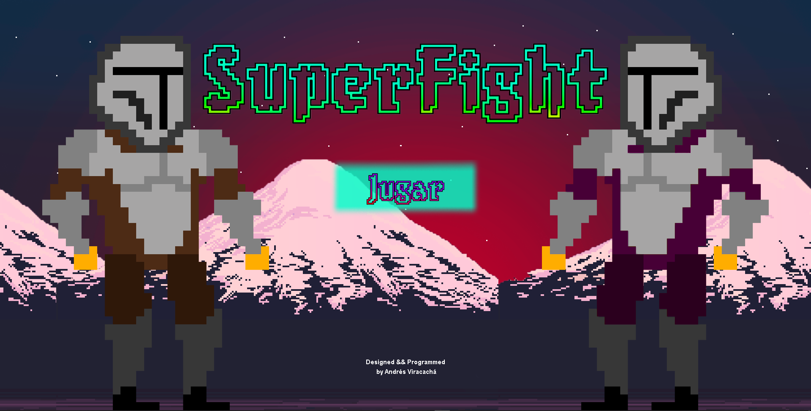
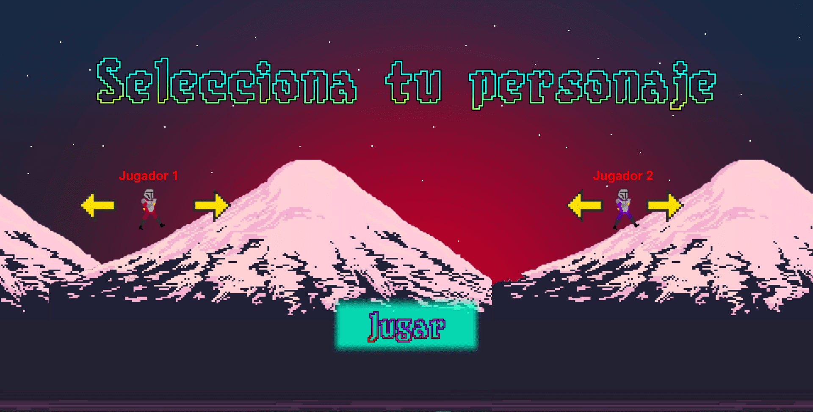
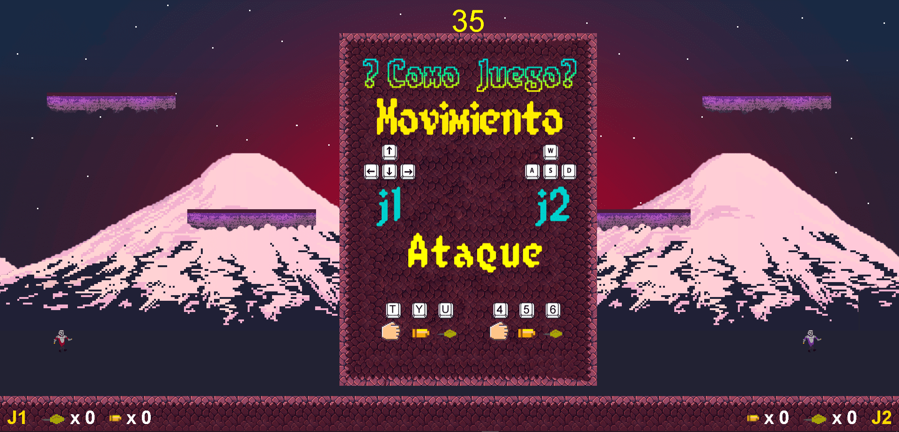
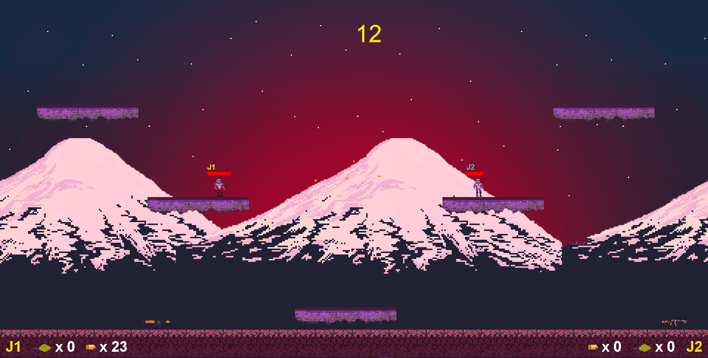

SuperFighters
Se desarrolló un videojuego para 2 personas con tematica de pixel art donde deben derrotarse uno a otro mediante golpes y armas que se encuentran a lo largo del escenario. Esta desarrollado con la libreria de videojuegos de javascript "Phaser" en su version 2. Esta es la pantalla principal del videojuego:
Luego de oprimir el botón jugar, el jugador será enviado a la pantalla de seleccion de aspecto de jugador, la cual es la siguiente:
Una vez elegido los personajes, los jugadores pasan a la pantalla de juego no sin antes un pequeño instructivo de como jugar al videojuego.
Una vez le dan al botón de jugar, se quita el instructivo y empieza el juego.
